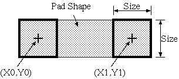

Pads and lines (copper traces, silk screen lines, etc) are represented by the line end points and the aperture used to draw the line. It is important to understand this when creating the pads for a new footprint. The following figure illustrates a pad or line which is drawn using a square aperture. The end points (X0,Y0), (X1,Y1) specify the center of the aperture. The size parameter specifies the size of the aperture.  Pads and lines are represented in this way because this is how lines are specified in RS-274-X (Gerber) files which are used for creating the masks used in board manufacturing. In fact, older mask making equipment created lines in precisely this fashion. A physical aperture was used to pass light through onto a photosensitive film.